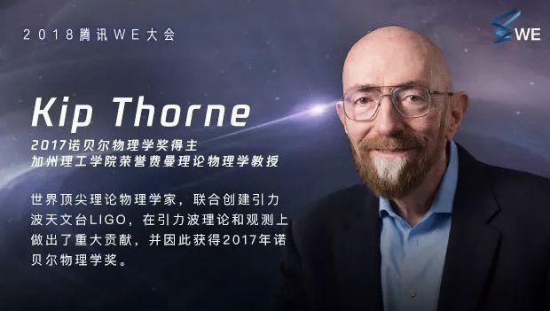
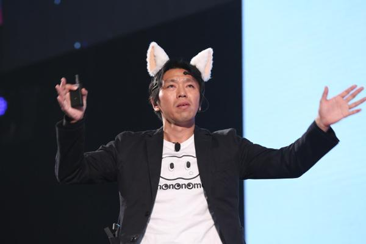
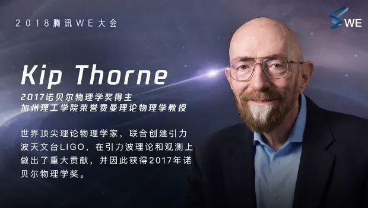

腾讯WE大会是腾讯一年一度的全球科学大会，始于2013年。大会于每年11月举行，邀请数名全球顶尖科学家进行同台演讲。
目录
- ▪ 2015年：向未来，共生长
- ▪ 2016年：无境-Empower
- ▪ 2017年：若有光
- 4 大会议程
- ▪ 2013年
WE大会大会简介
编辑WE——为未来而来，发挥群体智能，协作创新。致力于探索和分享互联网和科技界最前沿的思想和技术，是中国连接世界的跨界创新平台。
 WE大会
WE大会
 WE大会
WE大会
首届WE大会于2013年11月10日在中国深圳举行，并联合W3C 首次中国年会同期举行，汇聚了全球多位互联网思想家及前沿创新项目研发者，分享和解读了互联网和科技界的创新思想和技术，探索未来的多种可能性。
[6-7]
WE大会大会主题
编辑WE·为未来而来
WE大会历届大会简介
编辑WE大会2013年：Way to Evolve
WE大会2014年：Nothing But the Future
WE大会2015年：向未来，共生长
2015年11月8日，北京·北展剧场
[11]
。
WE大会2016年：无境-Empower
WE大会2017年：若有光
WE大会大会议程
编辑WE大会2013年
大会分为四幕，每幕有3至4位演讲嘉宾。
11:30 - 12:30 签到及互动展示
13:00 正式开幕
13:00 - 14:30 第一幕：Wonder梦想成真
14:30 - 16:00 第二幕：Knowledge知识无疆
16:00 - 17:30 第三幕：Power进化力量
WE大会2015年
上午创新场（9：30—12：00）：马丁飞行包，微宝机器人等十多项创新项目和酷炫科技产品不仅让你大饱眼福，更可以让你亲自体验。
下午探索场（13: 30—18: 30）：硅谷人脉王，顶级实验室掌门，机器人之父，80后超级创客们全都来了，他们要在大会上分享最前沿的思想和技术。
WE大会大会愿景及意义
编辑中国互联网高速发展和进步，特别是移动互联网时代中国和世界的差距在缩小，甚至在一些领域走在很前面。同时，国外在技术和产品层面也有着大量的经验和创新，很多时候国内没有机会去看到。
腾讯希望通过举办WE大会和同期举办的W3C年会，让W3C组织成员里更多优秀的国外互联网企业感受到中国互联网、特别是移动互联网产品和技术的踊跃创新和蓬勃发展，也希望将国外最领先的互联网思想和技术引入到国内，给国内互联网行业更多的借鉴和启发，也希望对未来科技和未来生活的探索的道路上，国内能与世界有更多的沟通和链接。
[8]
WE大会演讲嘉宾介绍
编辑Tim Berners-Lee——爵士，万维网联盟(W3C)创始人和领导者。
Nicholas Christakis——知名著作《大连接》之联合作者,医学博士和社会科学家，健康与社会网络领域专家。
马化腾——腾讯公司主要创办人之一，董事会主席、执行董事兼首席执行官。
段永朝——跨界思想家，财讯传媒（SEEC）首席战略官。
Steve Boswell——青蛙设计亚太区总经理。
徐扬生——香港中文大学（深圳）校长、中国工程院院士。
Liora Rosin——人机交互专家，耶路撒冷贝扎雷艺术与设计学院讲师，策展人。
Golan Levi——NG Soft用户体验设计专家。
Judy Brewer——万维网联盟（W3C）技术无障碍 技术领域负责人。
Paul-Adrien Menez——Zéro Gâchis网站首席执行官，联合创始人。
Robert Xiao——人机交互研究者，Qeexo联合创始人。
Hugh Evans——全球消除贫困计划首席执行官及联合创始人。
戴若犁——虚拟现实和动作捕捉专家，诺亦腾科技公司首席技术官，联合创始人。
Gershon Dublon——麻省理工学院媒体实验室 环境学习小组研究助理，博士生。
-
-


这个仰望星空的地方，藏着马化腾的梦想
基础技术得到了前所未有的重视，腾讯明确要强化前沿基础科学的投资，而不是站在巨人肩膀上做创新，它将从产品驱动加快成为一家产品和技术双轮驱动的科技公司。
2018-10-15113 -
2万字看完腾讯最纯粹的一届WE大会：从黑洞、虫洞到克隆猴
2018-12-3085 -

腾讯WE什么干这种傻事
2018-12-3036 -

腾讯今天那高逼格的WE大会，都有哪些精彩演讲向我们展示了未来？
2017-03-112
-


- 参考资料
-
- 1. 2万字看完腾讯最纯粹的一届WE大会：从黑洞、虫洞到克隆猴 ．虎嗅[引用日期2018-11-20]
- 2. 在京开启“雅努斯之门” ．人民日报海外版[引用日期2018-11-20]
- 3. 腾讯与自然集团达成长期战略合作 支持青年研究者 ．网易科技[引用日期2018-11-21]
- 4. 腾讯与英国国际贸易部达成战略合作，推动数字文创一揽子项目落地 ．凤凰资讯[引用日期2018-11-20]
- 5. Tencent hosts WE Summit in Shenzhen ．ChinaDaily[引用日期2018-11-21]
- 6. 为未来而来 腾讯WE大会在深圳举行 ．新华网[引用日期2013-11-11]
- 7. 腾讯WE大会召开 触摸互联网未来 ．网易[引用日期2013-11-11]
- 8. WE大会 ．腾讯网[引用日期2013-11-11]
- 9. 15位专家现场演讲 CEO马化腾指出七个路标 现场展示可触摸的“未来生活” 腾讯首届WE大会 为未来而来 ．网易新闻[引用日期2018-11-21]
- 10. 2014 WE大会嘉宾简介：生物感知专家Tomonori ．中国广播网[引用日期2018-11-21]
- 11. 2015腾讯WE大会：一场毫无功利心的商业大会 ．环球网[引用日期2018-11-21]
- 12. 2016腾讯WE大会：想象力盛宴 窥见30年后的腾讯 ．腾讯大申网[引用日期2018-11-20]
- 13. 2017年WE大会：星际旅行、返老还童……神话或可成真 ．环球网[引用日期2018-11-20]
- 收起
词条标签：